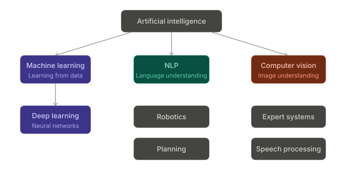
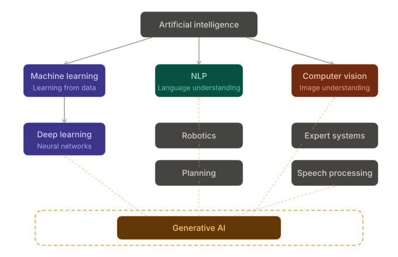

AI is not one thing — it's a family of technologies
Artificial Intelligence (AI)
Any system that mimics human decision-making
Machine Learning (ML)
AI that learns from data instead of following fixed rules
Deep Learning
ML using neural networks to find complex patterns
↓ See everyday examples
AI in Everyday Life
Each layer in action
AI
📧
Gmail spam filter
Rule + pattern based — is this email spam? Yes / No
ML
🎬
Netflix recommendations
Learns from your watch history to predict what you'll enjoy
Deep Learning
🌐
Google Translate
Face recognition, real-time translation — neural networks at scale
The AI Family Tree

What is Generative AI?
GenAI is the layer that creates — not just classifies
Traditional AI
Given input → predicts a label or score
"Is this email spam?" → Yes / No
Generative AI
Given input → generates new content
"Write a professional reply to this email" → full draft
↓ What can GenAI generate?
What Can GenAI Generate?
📝
Text
Documents, emails, reports, code
🖼️
Images
DALL-E, Midjourney
🎬
Audio & Video
Sora, ElevenLabs
📊
Data
Tables, JSON, structured outputs
For BAs, the most impactful modality is text — requirements, summaries, stakeholder communications, analysis.
Where Does Generative AI Fit?

The GenAI Landscape
Many tools, one underlying technology
Chat & Writing
ChatGPT · Claude · Copilot Chat · Gemini
Drafting, summarizing, analysis
Productivity
Copilot in Word/Excel/PPT · Notion AI
Document work, data analysis
Automation
n8n · Make · Zapier AI
Workflows, repetitive tasks
Search & Research
Perplexity · Bing AI
Research, fact-finding
Different interfaces — most run on the same small set of underlying models (GPT, Claude, Gemini, Llama). Learn to prompt well and you can use any of them.
How LLMs Work
An LLM is a very sophisticated autocomplete
1
Training
Reads billions of documents — books, websites, code, conversations
›
2
Pattern Learning
Learns which words, ideas, and structures follow each other
›
3
Generation
Predicts the most useful next tokens, one at a time
↓ The autocomplete analogy
Autocomplete
Like a very well-read colleague who can complete your sentence —
but has read everything ever written, in every language.
What it IS doing
Sophisticated pattern matching at massive scale — predicting the most useful next word given everything it's seen
What it is NOT doing
"Thinking" the way humans do — it doesn't have beliefs, intentions, or real understanding
This is why LLMs can be confidently wrong (hallucinate) — they're completing patterns, not checking facts.
Tokens & Context Windows
Two concepts that explain LLM limits
Tokens
A token ≈ ¾ of a word
"Knowledge Worker" = ~3 tokens
Very large documents may be truncated
Context Window
The model's "working memory" per session
Includes your messages and its replies
Modern models: 100K–200K tokens (300–500 pages)
Exceed it → model forgets earlier messages
Practical tip: If the model seems to "forget" what you said earlier in a long session, start a fresh conversation and re-provide the key context.
Context Carryover
The LLM remembers everything in your current conversation
How it works
Every message + every reply is appended to the context
The model sees the full history each time it responds
This is why "make it shorter" or "change the tone" works
Best practices
Start a new chat for a completely different task
Re-state important context in very long conversations
The model does not remember previous sessions (unless memory is explicitly enabled)
Prompt
Garbage in, garbage out — but it's easy to fix
Role Who should it act as?
"You are an experienced professional reviewing a requirements document."
Instruction What do you want?
"Review the following requirements and identify any ambiguities or missing information."
Context What background does it need?
"This is for an ERP migration project. The audience is the development team."
Output Format How should it respond?
"Return a numbered list of issues. Keep each point under 2 sentences."
Element 1: Role
"Who should the model act as?"
Setting a role shifts the model's perspective, vocabulary, and level of detail.
Generic
"Summarize this document."
→ Generic summary, no particular audience or purpose
With Role
"You are an experienced professional. Summarize this document."
→ Focuses on requirements, stakeholders, business impact
Element 2: Instruction
"What do you want it to do?"
Be specific. Vague instructions produce vague results.
Vague
"Help me with this document."
Specific
"Identify all functional requirements, list any ambiguities, and flag any dependencies between requirements."
Element 3: Context
"What background does it need?"
The model only knows what you tell it. Background context shapes every decision it makes.
Who is the audience? (technical? executive? external?)
What is the project or situation?
What are the constraints? (deadline, budget, policy)
What has already been decided?
Element 4: Output Format
"How should it respond?"
Specifying format removes back-and-forth and gives you copy-paste ready output.
Format options
Bullet list / numbered list
Table
Paragraph (max N words)
Specific document sections
JSON / structured data
Example
"Return a numbered list of issues. Keep each point under 2 sentences. End with a one-paragraph overall risk summary."
Prompt: Before vs After
The same question — two very different results
Weak Prompt
"Summarize this document."
No role or perspective
No audience specified
No focus area
No output format
Strong Prompt
"You are an experienced professional. Summarize the following requirements document for a non-technical stakeholder. Focus on business impact, not technical details. Use 5 bullet points, each under 20 words."
Role (BA context)
Audience (non-technical stakeholder)
Focus (business impact)
Output format (5 bullets, word limit)
Few-Shot Examples
Show, don't just tell
Zero-shot (no example)
"Write a project status update."
Few-shot (with example)
"Write a project status update in this format:
Status: [Green/Amber/Red]
This week: [2 sentences]
Next week: [2 sentences]
Blockers: [if any]
Here's a good example: [paste one]
Now write one for: [paste your project details]"
Why it works: The model calibrates exactly to your format, tone, and length — no back-and-forth needed. Ideal for templated BA outputs: status reports, BRDs, meeting summaries.
Chain of Thought Prompting
Ask it to think before it answers
The problem
For complex tasks, LLMs sometimes jump to a conclusion that's wrong
The fix
Add "think step by step" or "reason through this before answering"
"You are reviewing a business requirements document. Before giving your assessment, list the key business objectives, list the stated assumptions, and identify any gaps between them. Then provide your overall assessment."
📄 Analysing complex documents
⚖️ Comparing options
🔍 Diagnosing process issues
Demo
ObjectiveDefine a prompt for an LLM to act as your Personal Assistant and manage your calendar — built using the 4 prompt elements.
↓ Let's build it section by section
Demo
ObjectiveDefine a prompt for an LLM to act as your Personal Assistant and manage your calendar — built using the 4 prompt elements.
Role Who should it act as?
"You are my personal assistant and manage my calendar."
Demo
ObjectiveDefine a prompt for an LLM to act as your Personal Assistant and manage your calendar — built using the 4 prompt elements.
Instruction What do you want?
Read my whole calendar for the day. Categorise each meeting into Interview, Internal, or External — in that priority order. For interview meetings, identify the candidate, locate their CV from emails or OneDrive, and generate a technical interview questionnaire.
Demo
ObjectiveDefine a prompt for an LLM to act as your Personal Assistant and manage your calendar — built using the 4 prompt elements.
Context What background does it need?
Internal = all attendees from Preferred Square only. External = any attendee outside Preferred Square. Interview = identified from invitees list or meeting title. Do not fabricate any information. Include meeting links for all meetings.
Demo
ObjectiveDefine a prompt for an LLM to act as your Personal Assistant and manage your calendar — built using the 4 prompt elements.
Output Format How should it respond?
Structured lists under Interview / Internal / External headings — each with meeting time, location, attendees, agenda, and (for interviews) candidate name, CV status, and questionnaire.
Demo
ObjectiveDefine a prompt for an LLM to act as your Personal Assistant and manage your calendar — built using the 4 prompt elements.
Full Prompt
You are my personal assistant and manage my calendar.
Your responsibility involves reading my whole calendar for the day and categorise each meeting into one of the following categories in the given order:
1. Interview meetings
2. Internal Meetings. Any meeting with no attendee outside Preferred Square should be considered internal meeting.
3. External Meetings. Any meeting with any attendee outside Preferred Square should be considered external meeting.
Do not fabricate any information and include meeting links for all the meetings.
All the meetings for the day should be considered without any exception.
If any meeting is categorized as interview meeting:
- Try to identify the candidate from the invitees list or meeting title
- If any candidate is identified, try to find the CV by reading my emails or look in the files/folders on OneDrive
- If the CV is located, design a technical interview questionnaire along with the responses
Make sure to include all my meetings for today, each meeting should be categorised in only one of Interview / Internal / External list.
Output Format:
Interview Meetings:
1. DA Interview | 10:00 AM - 11:00 AM | Burj Khalifa
Internal Attendees: Vineet.sharma@preferredsquare.com
Candidate Name: Aman Gupta
CV/Resume: Check related emails or files in OneDrive to locate the CV
Interview questionnaire: Design a technical questionnaire based on the CV, skip if the CV not found
Internal Meetings:
1. Timesheet Process Mapping | 11:00 - 12:00 PM | Empire Estate
Internal Attendees: sagar.s@preferredsquare.com, Vineet.s@preferredsquare.com
Agenda: Streamline the timesheet filling process
External Meetings:
1. Dashboard update | 3:00 - 4:00 PM | Shard
Internal Attendees: abhishek.j@preferredsquare.com, bhor.c@preferredsquare.com
External Attendees: mark@abc.com, scott@abc.com
Agenda: Discuss the progress on the dashboard development
Your Turn
Open Copilot
Objective
Define a prompt to read your emails and prepare 2 lists:
1. List of emails awaiting response
2. Action items for the day
Task
Rewrite the prompt using all 4 elements:
Role
Instruction
Context
Output Format
Super Powers of an LLM
Are LLMs natively capable of reading your emails or accessing your inbox or calendar?
No
LLMs only know what's in their training data — they have no live access to your systems. Two techniques bridge this gap:
RAG
Retrieval-Augmented Generation
Tools
Function Calling & Actions
RAG
Retrieval-Augmented Generation — giving the LLM access to your data
What it is: Before the LLM generates a response, RAG retrieves relevant content from an external source — your inbox, calendar, files, or a database — and injects it into the prompt as context.
Without RAG
LLM has no idea what's in your inbox or calendar — it can't answer questions about your actual meetings or emails.
With RAG
Your emails and calendar events are fetched and passed to the LLM — it now has the context it needs to categorise, summarise, and respond.
In our demo: When the PA prompt runs in Copilot, RAG retrieves your actual calendar events and emails from Microsoft 365 — feeding them into the LLM so it can categorise meetings and find CVs.
Tools
Function Calling — letting the LLM take actions beyond generating text
What it is: Tools allow an LLM to call external functions or services — reading files, searching emails, writing to a calendar, or triggering a workflow — rather than just producing text.
Without Tools
The LLM can only generate text. It cannot look up a file on OneDrive, check your inbox, or update your calendar.
With Tools
The LLM can call a "search OneDrive" tool, a "read email" tool, or a "get calendar events" tool — and use the results to build its response.
In our demo: When the PA prompt asks Copilot to find a candidate's CV, it uses a tool to search OneDrive and emails — the LLM doesn't guess, it actually looks.
Key Takeaways
6 things to remember from Session 1
1
GenAI creates new content — traditional AI classifies existing content
2
LLMs predict the next token — they're not "thinking", they're pattern matching at scale
3
Great prompt = Role + Instruction + Context + Output format
4
Context window = working memory — start fresh when switching topics
5
Few-shot + Chain of Thought are your two most powerful prompting techniques
6
These skills are transferable — works in Copilot, Claude, ChatGPT, or whatever comes next
 ← All Sessions
← All Sessions